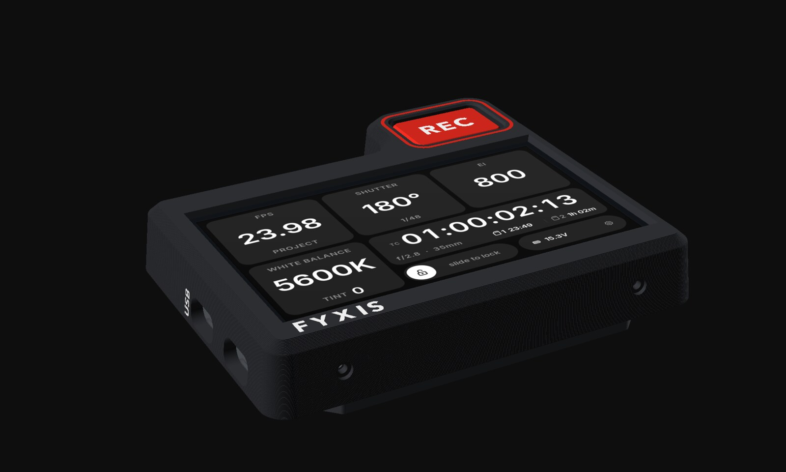
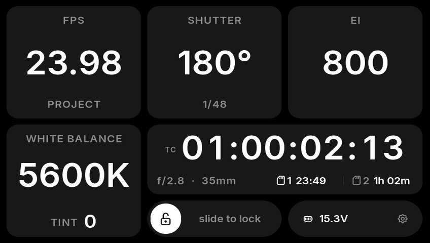
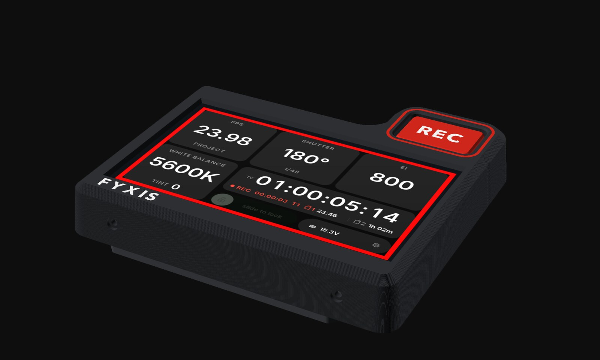

FYXISfor the PYXIS 12K
A touchscreen side display and a real REC button for the Blackmagic PYXIS. FPS, shutter, EI, white balance, timecode, cards and battery in big type, on the side of the camera, over Bluetooth. Free to build, free to use.

See it
Run
Twenty seconds with the real firmware: rolling a take, an off-speed change, saving a preset, and switching to night mode.
- 00Timecode running, lens and cards underneath
- 02REC: red frame, clip timer, take number
- 07Tap FPS, pick 48 for off-speed
- 11Hold a preset card to save the look
- 15Settings, then night mode for dark sets
The firmware running in its desktop simulator with a simulated camera. White dots show touches.
Built for
The Operator
The PYXIS is a box. The settings you check every take live on a small screen at the back. FYXIS puts them where your eye already is.
The big six, big
FPS with off-speed in amber, shutter angle and its 1/x speed, EI, white balance and tint. Grey when the link drops, so a stale value never looks live.
A real REC key
A tactile key on the case and a red frame round the screen. The frame appears the instant you press, before the camera answers. Optional hold-to-stop.
Timecode you can read
64-pixel timecode with both CFexpress cards' time left, the sensor area, a clip timer while rolling and the last take's length after.
Change it by touch
Big − / + buttons, off-speed chips from 30 to 120, shutter by angle or speed, exact values on a keypad. Slide to lock before you hand the camera over.
Presets
Six one-tap looks: frame rate, shutter, EI, white balance and tint together. Hold a card to save what the camera is set to now.
Take log
Every take's number, start timecode and length, newest first. Handy when the script supervisor asks how long that last one was.
Battery that warns you
Volts or percent from the camera's input, time left from how fast it's falling, amber and red levels you set, and a two-hour graph.
Night mode
Everything in dim red on black, for dark sets and adapted eyes. The record frame stays full red.
Updates over Wi-Fi
New firmware from a phone or laptop with the display still on the camera. If an update doesn't start properly, it rolls back by itself.
Every
Screen

An afternoon
And a printer
One off-the-shelf board, one cable, one key switch and a printed case. No soldering inside the camera, no tools to install for flashing.
- DisplayWaveshare ESP32-S3-Touch-LCD-4.3800 × 480 capacitive touchscreen with an ESP32-S3, Bluetooth and Wi-Fi built in.
- PowerRight-angle USB-C cableFrom the camera's rear USB-C to the board. Power only; settings go over Bluetooth.
- REC keyKailh Choc V2 switch + resistorTwo wires to the board's sensor header. The keycap is printed.
- CasePrinted in PETG or ASATwo parts plus the key, multi-colour inlays optional. Two 1/4"-20 button heads into the side plate, four M2 screws.
Flash the firmware
Download the latest
fyxis-…-full.binfrom Releases and write it with Espressif's web flasher in Chrome. Step by step.Print the case
Ready-to-slice 3MF files with the colour inlays already assigned, or edit the OpenSCAD model. Enclosure files.
Wire the REC key
Switch and a 1 kΩ resistor between the header's AD pin and ground. Wiring.
Mount it
Two 1/4"-20 screws into the PYXIS side plate, locating boss in the plate's pocket. USB-C to the camera's rear port.
Pair once
Turn on Bluetooth in the camera's Setup menu and type the 6-digit PIN it shows. From then on it reconnects by itself.

Made to
Disappear
A slim two-part case that bolts into the side plate's own 1/4"-20 holes, with a boss that drops into the plate's pocket so it can't twist. The REC key sits in a recessed well with a red ring, a little below the face, so you find it by feel and don't knock it.
How it
Works
Blackmagic's own protocol
The PYXIS publishes its settings over Bluetooth LE using the same camera-control protocol as its SDI control. FYXIS pairs once with the camera's PIN, subscribes to settings and timecode, and writes changes back the same way the Blackmagic Camera app does.
Fast where it matters
Only what changes is redrawn, so a timecode tick touches two digits, not the screen. The link runs at a 15 ms connection interval and the REC key is interrupt-driven, so the frame appears as you press.
Why not USB?
It was tested: on that cable the PYXIS is always the USB host, and only talks to a host that also powers it. So the cable carries power and the data goes over Bluetooth. Nothing in the camera is changed.
Hackable
ESP-IDF and LVGL in plain C, with a desktop simulator that runs the same UI and protocol code against a real camera or a demo. The case is a parametric OpenSCAD model. Everything is on GitHub.
Questions
Answered
Does it work with other Blackmagic cameras?
Can I still use the Blackmagic Camera app?
What happens if the Bluetooth link drops?
Can the screen be dimmed?
Does it show the lens?
Is it affiliated with Blackmagic Design?
Build
Your
Own
Firmware, case, docs and the simulator are all on GitHub. Take it, change it, make it better. If you build one, I'd love to see it on your rig.
Firmware and tools MIT licence; case design, docs and media CC BY 4.0. Interface set in Inter (SIL OFL) with Tabler Icons (MIT). FYXIS isn't affiliated with or endorsed by Blackmagic Design; PYXIS is a trademark of Blackmagic Design Pty. Ltd. The screens on this page are the real firmware running in its simulator; the case images are renders of the printable model.